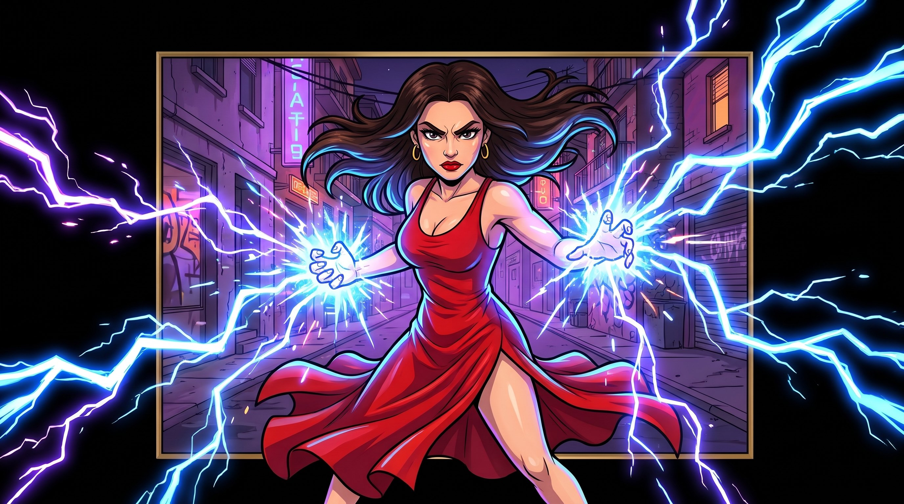
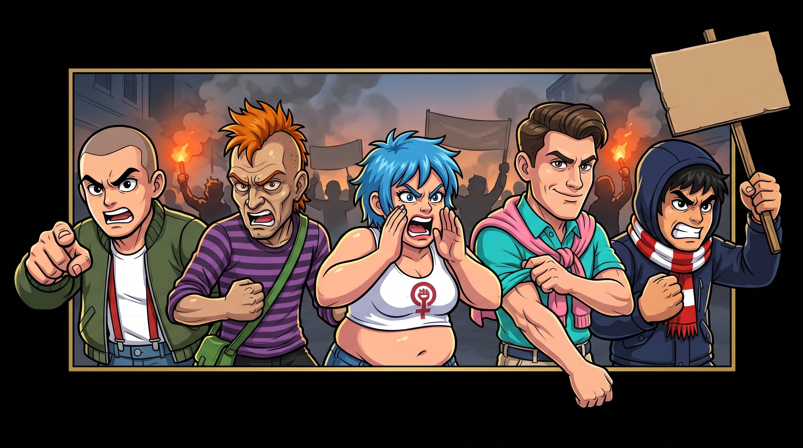
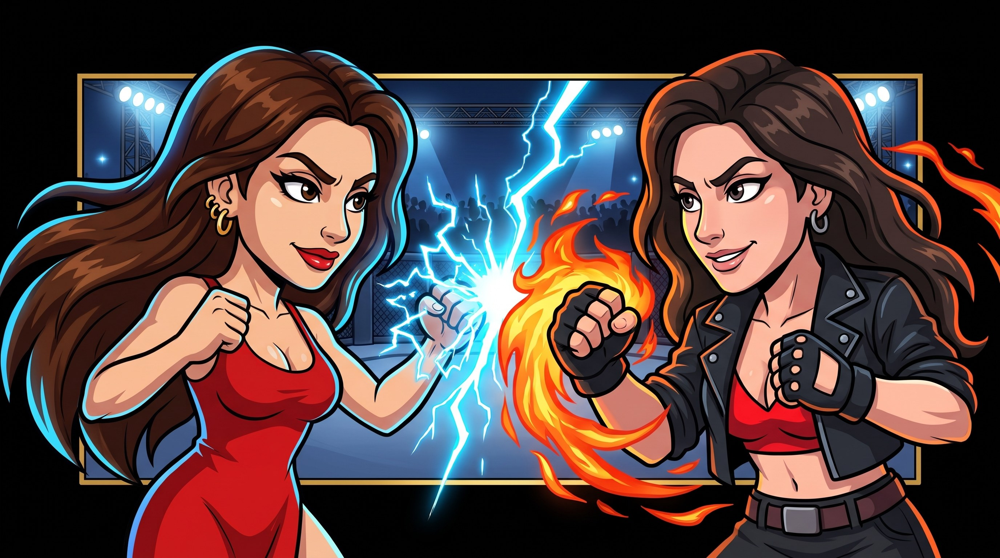
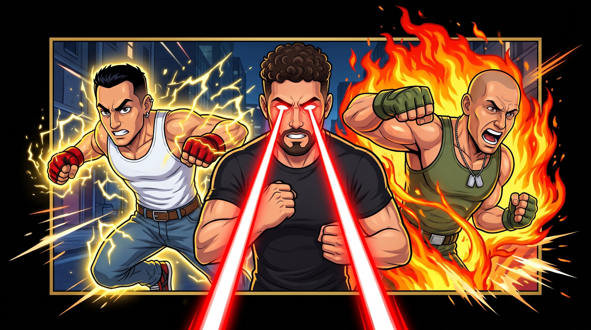
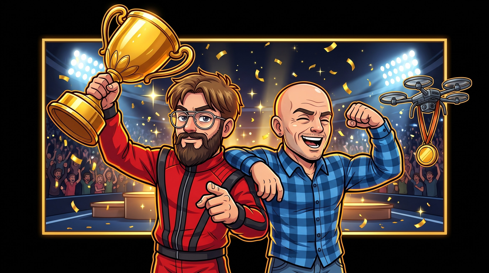
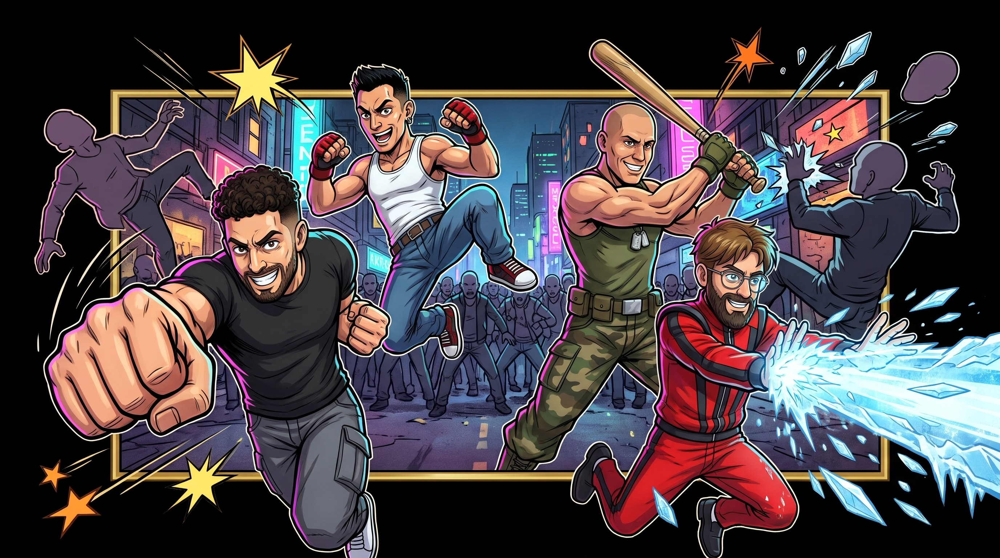

AventuraAdventure
La historia completa, solo o en cooperativo, con tienda entre fase y fase.
The full story, solo or co-op, with a shop between stages.

El mundo se ha vuelto loco. Toca arreglarlo a hostias.The world has lost its mind. Time to fix it with your fists.
Unos millennials que estaban hasta los cojones han salido a repartir hostias a todo el que hace del mundo un sitio peor. Un brawler para 1 a 4 jugadores, en el mismo PC o por internet.A bunch of millennials who had had enough went out to punch everyone making the world a worse place. A beat 'em up for 1 to 4 players, on the same PC or online.
El mundo se ha vuelto loco: todos radicalizados, todos gritando y nadie escuchando. Ellos son gente normal que se ha cansado de aguantar, y han decidido poner orden de la única forma que queda: a hostias.
The world has lost its mind: everyone radicalised, everyone shouting and nobody listening. They are ordinary people who got tired of putting up with it, and have decided to restore order the only way left: with their fists.

Fachas, perroflautas, ocupas, criptobros, gymbros, tertulianos, skinheads, feminazis… Todos los que hacen del mundo un sitio peor están aquí, y por fin puedes decirles lo que piensas. Con los puños. Sin bandos: aquí cobra todo el mundo.
Far-right thugs, crusties, squatters, crypto bros, gym bros, TV pundits, skinheads, feminazis… Everyone who makes the world a worse place is here, and at last you can tell them what you think. With your fists. No sides taken: everybody gets it.

Hasta cuatro jugadores en el mismo ordenador, con teclado y mandos, como en los salones recreativos. ¿Tus amigos están lejos? También podéis jugar por internet. O mezcladlo todo.
Up to four players on the same computer, keyboard and controllers, just like the arcades. Friends far away? You can also play online. Or mix both.

Golpes, combos, agarres y remates. Bates, katanas y botellas que recoges del suelo. Y poderes que limpian la pantalla: rayos, columnas de fuego, ondas de energía. Fácil de coger en dos minutos, difícil de dominar.
Punches, combos, grabs and finishers. Bats, katanas and bottles you pick up off the floor. And screen-clearing powers: laser beams, pillars of fire, energy waves. Easy to pick up in two minutes, hard to master.

Pásatelo. Luego pásatelo en un nivel más difícil. Luego intenta entrar en los récords mundiales, que empiezan de cero cada temporada. Siempre hay un tiempo que batir y un amigo al que picar.
Beat it. Then beat it on a harder level. Then try to make the world leaderboards, which reset every season. There is always a time to beat and a friend to wind up.

¿Quién es el mejor del grupo? Todos contra todos, por equipos o en torneo eliminatorio, en casa o en línea. Y si preferís ir juntos, aguantad oleadas de enemigos hasta que no quede nadie en pie.
Who is the best in the group? Free-for-all, teams or a knockout tournament, at home or online. And if you would rather stick together, hold out against waves of enemies until nobody is left standing.

La historia completa, solo o en cooperativo, con tienda entre fase y fase.
The full story, solo or co-op, with a shop between stages.
Todos contra todos o por equipos, en el escenario que elijas y con cualquier personaje.
Free-for-all or teams, on the stage of your choice with any character.
Eliminatorias entre amigos hasta que solo quede uno. También en línea.
Knockout brackets with friends until one is left standing. Online too.
Oleadas de enemigos cada vez más duras hasta que no puedas más. Con tabla de récords.
Ever tougher waves of enemies until you drop. With its own leaderboard.
Prueba poderes y combos con calma, con todos los personajes y la lista de movimientos a la vista.
Try powers and combos in peace, with every character and the move list on screen.
Clasificación mundial por temporadas, por número de jugadores y por dificultad.
Seasonal world rankings, by number of players and by difficulty.
Tu cara y tu nombre dentro del juego. Escríbenos y te contamos cómo.
Your face and your name inside the game. Write to us and we will tell you how.
ContactoContactPara Windows, con teclado o mando. Muy pronto a la venta: entra en el Discord y serás de los primeros en enterarte.For Windows, keyboard or controller. On sale very soon: join the Discord and be among the first to know.